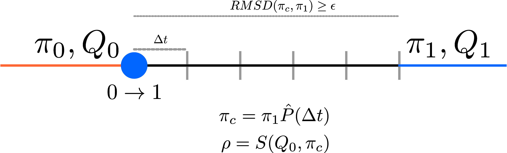

PalantiR uses a rescaling strategy to simulate smooth
transitions in temporal heterogeneity simulations. Temporal
heterogeneity simulations have a “switch point” from one substitution
model to another. This can correspond to a fitness shift or a population
size change.
The idea is to continuously rescale the substitution rate matrix until the equilibrium distribution of the rescaled rates matrix matches that of the new matrix we switch into.

The figure shows a branch on which a switch occurs from substitution
model 0 to to substitution model 1. Model
0 has a switching rates matrix Q0 and an
equilibrium distribution π0. The branch segment where model
0 applies is represented by an orange line.
The switch into model 1 is represented by a blue circle.
The branch is now segmented into small sections of length
Δt. We now calculate a rescaled version of Q
and π for each of the branch segments.
The idea is to calculate an empirical π for a short
branch segment, given Δt.
For a small t, we can approximate transition probability
P as P ≈ Q⋅Δt + I.
We then estimate the empirical π for the current branch
segment as π⋅P.
Using the current estimate of π, we now want to
calculate a scaling factor ρ, which will be used to rescale
the current substitution rate matrix. The scaling function
S is discussed in more detail in Rate Matrix Scaling.
The rescaled matrix Q is now used to simulate
substitutions for the current branch segment.
The rescaling procedure is applied until the current π
is within an acceptable range of the π for next model. Once
the RMSD between the two equilibrium vectors is within
user-specified bound ε, the rescaling is stopped. At this
point, the simulation continues with substitution rate Q1
and equilibrium distribution π1, corresponding to the model
1 (blue branch segment).
Because every rescaled segment applies a scalar multiple of one rate
matrix, an out-of-equilibrium branch is exactly the homogeneous process
run for an adjusted intrinsic duration, and that duration can be
computed in closed form instead of segment by segment. This method
(rescale_method = "exact", introduced in v1.1.0 and the
default since v1.2.2; pass rescale_method = "segments" for
the original scheme) delivers the branch’s expected substitution budget
exactly (the segment scheme delivers it to within the segment
discretisation), runs faster, and reports event times in the same
branch-position units, so output is interchangeable between the two
methods. The segment scheme remains the default.
Also note that since v1.0.1 the segment forecast advances at the site’s rate multiplier; earlier versions under-delivered substitutions on fast sites during the transient.